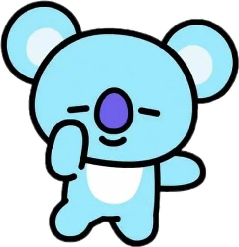
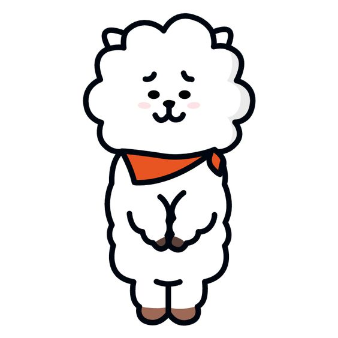
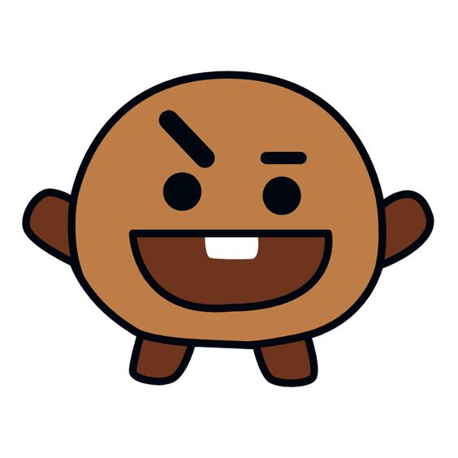
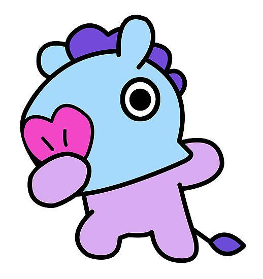
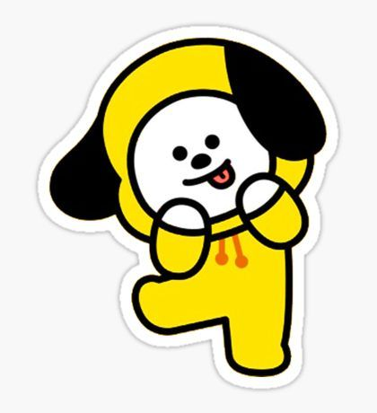
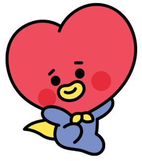
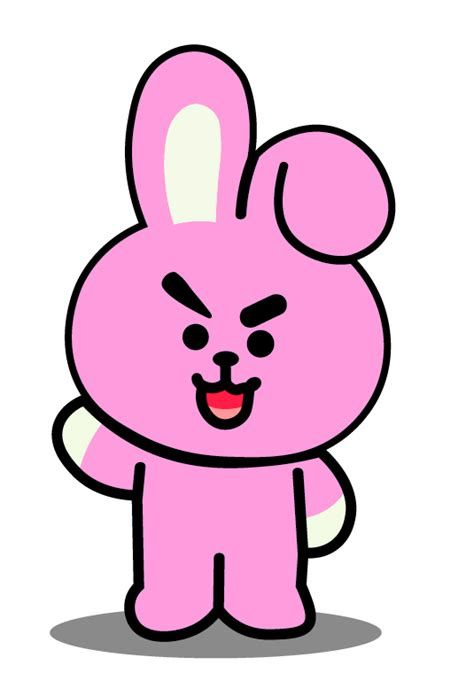
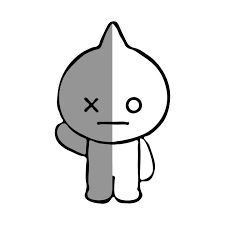

BT21
BT21 são os personagens mais fofos do mundo! São os mascotes do BTS, foram criados pelos proprios membros e pelo aplicativo Line.
Esse grupo é formado por: Koya, RJ, Shooky, Mang, Chimmiy, Tata, Cooky e Van.
Resumo da historia:
O principe Tata era muito curioso então descidiu dar uma olhada pelo universo, junto com o seu amigo Van, assisdentalmente ele acabou
passando aqui na Terra ele viu um grupo chamado BTS, Tata ficou imprecionado com o que viu então descidiu criar seu proprio grupo
então ele vai atras de membros para o grupo (todos os outros personagens). Então juntos eles tem o objetivo de se tornarem mundialmente
famosos
Koya personagem do RM:
Ele é um coala fofo e inteligente, esse docinho sempre
parece estar com sono, Koya é super talentoso.
RJ personagem do Jin:
Uma alpaca que curte cozinhar e comer, RJ veio de Machu Picchu,
mas ele acabou fugindo, pois queria uma vida animada e divertida na
cidade grande, sau pelagem é incrivel!
Shooky personagem do SUGA:
Esse pequenino brincalhão esorridente é muito devertido, gosta
muito dos seus amigos, e curte fiar bem longe de leite.
Mang personagem do J-Hope:
Dançar é magico para Mang, ele é adoravel, sua felicidade ao
dançar é 100%, Mang utiliza uma máscara em seu rosto. Esse pônei
mantem sua identidade em segredo.
Chimmiy personagem do Jimin:
Com o seu moletom amarelo ele arrasa! Esse cachorrinho fofo é
super dedicado no que faz, ele é um amor!
Tata personagem do V:
Tata veio de outro mundo, ele é um principe, chqma muita atenção por
onde passa. Esse alienigena tem um jeitinho de ser que é muito fofo.
Cooky personagem do Jungkook:
Esse coelinho rosa tem uma apaencia muito fofa e bonita, ele sonha em
se tornar bem forte e sarado.
Van representante dos ARMY's:
O representante dos ARMY's, ele é o protetor do BT21, Van é um robó espacial.